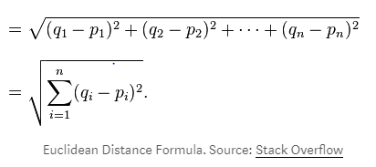

Material
K-Nearest Neighbor (KNN)¶
Pengertian K-NN¶
Algoritma K-NN adalah sebuah metode untuk melakukan klasifikasi terhadap objek berdasarkan data pembelajaran yang jaraknya paling dekat dengan objek tersebut.
Ketepatan algoritme K-NN ini sangat dipengaruhi oleh ada atau tidaknya fitur-fitur yang tidak relevan, atau jika bobot fitur tersebut tidak setara dengan relevansinya terhadap klasifikasi. Riset terhadap algoritme ini sebagian besar membahas bagaimana memilih dan memberi bobot terhadap fitur, agar performa klasifikasi menjadi lebih baik.
Terdapat beberapa jenis algoritme pencarian tetangga terdekat, diantaranya:
- Linear scan
- Pohon kd
- Pohon Balltree
- Pohon metric
- Locally-sensitive hashing (LSH)
Algoritme K-NN ini memiliki konsistensi yang kuat. Ketika jumlah data mendekati tak hingga, algoritme ini menjamin error rate yang tidak lebih dari dua kali Bayes error rate (error rate minimum untuk distribusi data tertentu).
Data untuk algoritma KNN terdiri dari beberapa atribut multi-variate Xi yang akan digunakan untuk mengklasifikasikan Y. Data dari KNN dapat dalam skala ukuran apapun, dari ordinal ke nominal.
Untuk rumus yang digunakan, untuk menghitung jaraknya kita bisa gunakan rumus Euclidean Distance. Mirip dengan Pythagoras, hanya saja Euclidean Distance memiliki dimensi lebih dari 2.

Tahapan Langkah Algoritma K-NN¶
- Menentukan parameter k (jumlah tetangga paling dekat).
- Menghitung kuadrat jarak eucliden objek terhadap data training yang diberikan.
- Mengurutkan hasil no 2 secara ascending (berurutan dari nilai tinggi ke rendah).
- Mengumpulkan kategori Y (klasifikasi nearest neighbor berdasarkan nilai k).
- Dengan menggunakan kategori nearest neighbor yang paling mayoritas maka dapat diprediksikan kategori objek.
Kelebihan dan Kekurangan K-NN¶
- Kelebihan
KNN memiliki beberapa kelebihan yaitu bahwa dia tangguh terhadap training data yang noisy dan efektif apabila data latih nya besar.
-
Kekurangan
-
KNN perlu menentukan nilai dari parameter K (jumlah dari tetangga terdekat).
- Pembelajaran berdasarkan jarak tidak jelas mengenai jenis jarak apa yang harus digunakan dan atribut mana yang harus digunakan untuk mendapatkan hasil yang terbaik.
- Biaya komputasi cukup tinggi karena diperlukan perhitungan jarak dari tiap sample uji pada keseluruhan sample latih.
Implementasi¶
#import library import math import pandas as pd import matplotlib.pyplot as plt #memasukkan file csv dari excel ke python dataset = pd.read_csv('UniversalBank.csv') col_age = dataset.iloc[:, 1].values #mengambil kolom 2 dari excel (Age) col_exp = dataset.iloc[:, 2].values #mengambil kolom 3 dari excel (Experience) col_inc = dataset.iloc[:, 3].values #mengambil kolom 4 dari excel (Income) col_zip = dataset.iloc[:, 4].values #mengambil kolom 5 dari excel (Zip Code) col_fam = dataset.iloc[:, 5].values #mengambil kolom 6 dari excel (Family) col_cca = dataset.iloc[:, 6].values #mengambil kolom 7 dari excel (CCAvg) col_edu = dataset.iloc[:, 7].values #mengambil kolom 8 dari excel (Education) col_onl = dataset.iloc[:, 12].values #mengambil kolom 13 dari excel (Online) knn=int(input("Masukkan Nilai K = ")) age= [] exp= [] inc= [] zip1= [] fam= [] cca= [] edu= [] online= [] age_dt= [] exp_dt= [] inc_dt= [] zip1_dt= [] fam_dt= [] cca_dt= [] edu_dt= [] onl_dt= [] Hasil=[] benar=[] data=[] accuracy=[] #fungsi mengambil data train yang mempunyai nilai class 0 dengan nama masuk_data_train_0 def masuk_data_train_0 (data,masuk): a=0 for i in range (len (data)): if (col_onl[i] ==0 and a<202): masuk.append(data[i]) a=a+1 #fungsi mengambil data train yang mempunyai nilai class 1 dengan nama masuk_data_train_1 def masuk_data_train_1 (data,masuk): a=0 for i in range (len (data)): if (col_onl[i] == 1 and a<298): masuk.append(data[i]) a=a+1 #fungsi mengambil data tes yang mempunyai nilai class 0 dengan nama masuk_data_test_0 def masuk_data_test_0 (data,masuk): a=0 for i in range (len (data)): if (col_onl[i] == 0): a+=1 if(a>202): masuk.append(data[i]) #fungsi mengambil data tes yang mempunyai nilai class 1 dengan nama masuk_data_test_1 def masuk_data_test_1 (data,masuk): a=0 for i in range (len (data)): if (col_onl[i] == 1): a+=1 if(a>298): masuk.append(data[i]) #fungsi mengambil data dari beberapa variable data train, data tes, knn, dan menampilkan hasil def pcx(data2,data3,data4,data5,data6,data7,data8,data14, dt2,dt3,dt4,dt5,dt6,dt7,dt8,dt14, k,out): #membuat perulangan untuk menghitung jarak dari data asli dengan data tes for i in range(len(dt2)): dist1=[] online=[] coba=0 for a in range(len(data2)): dist = math.sqrt( ((data2[a] - dt2[i])**2) + ((data3[a] - dt3[i])**2) + ((data4[a] - dt4[i])**2) + ((data5[a] - dt5[i])**2) + ((data6[a] - dt6[i])**2) + ((data7[a] - dt7[i])**2) + ((data8[a] - dt8[i])**2)) dist1.append(dist) dist1,online = zip(*sorted(zip(dist1,data14))) for z in range(k): if (online[z]==0) : coba+=1 if ((z/2)<=coba): a=0 out.append(a) else : a=1 out.append(a) del dist1 del online coba=0 def hasil(data_asli,data_perbandingan,out,out2,out3): a=0 for x in range(len(data_asli)): if (data_asli[x]==data_perbandingan[x]): a+=1 out.append(a) out2.append(4500) out3.append(a/4500) #memasukkan data train mempunyai nilai class 0 masuk_data_train_0(col_age,age) masuk_data_train_0(col_exp,exp) masuk_data_train_0(col_inc,inc) masuk_data_train_0(col_zip,zip1) masuk_data_train_0(col_fam,fam) masuk_data_train_0(col_cca,cca) masuk_data_train_0(col_edu,edu) masuk_data_train_0(col_onl,online) #memasukkan data train mempunyai nilai class 1 masuk_data_train_1(col_age,age) masuk_data_train_1(col_exp,exp) masuk_data_train_1(col_inc,inc) masuk_data_train_1(col_zip,zip1) masuk_data_train_1(col_fam,fam) masuk_data_train_1(col_cca,cca) masuk_data_train_1(col_edu,edu) masuk_data_train_1(col_onl,online) #memasukkan data tes mempunyai nilai class 0 masuk_data_test_0(col_age,age_dt) masuk_data_test_0(col_exp,exp_dt) masuk_data_test_0(col_inc,inc_dt) masuk_data_test_0(col_zip,zip1_dt) masuk_data_test_0(col_fam,fam_dt) masuk_data_test_0(col_cca,cca_dt) masuk_data_test_0(col_edu,edu_dt) masuk_data_test_0(col_onl,onl_dt) #memasukkan data train mempunyai nilai class 1 masuk_data_test_1(col_age,age_dt) masuk_data_test_1(col_exp,exp_dt) masuk_data_test_1(col_inc,inc_dt) masuk_data_test_1(col_zip,zip1_dt) masuk_data_test_1(col_fam,fam_dt) masuk_data_test_1(col_cca,cca_dt) masuk_data_test_1(col_edu,edu_dt) masuk_data_test_1(col_onl,onl_dt) pcx(age,exp,inc,zip1,fam,cca,edu,online, age_dt,exp_dt,inc_dt,zip1_dt,fam_dt,cca_dt,edu_dt,onl_dt, knn,Hasil) hasil(onl_dt,Hasil,benar,data,accuracy) df = pd.DataFrame({'knn':knn,'databenar':benar, 'Jmldata':data, 'accuracy':accuracy}) df.plot(kind='bar',x='knn',y='accuracy',color='blue') df.sort_values(by=['databenar'],inplace=True,ascending=False) print (df) plt.show()
Referensi¶
https://id.wikipedia.org/wiki/KNN
https://medium.com/bee-solution-partners/cara-kerja-algoritma-k-nearest-neighbor-k-nn-389297de543e
http://cgeduntuksemua.blogspot.com/2012/03/pengertian-kelebihan-dan-kekurangan-k.html